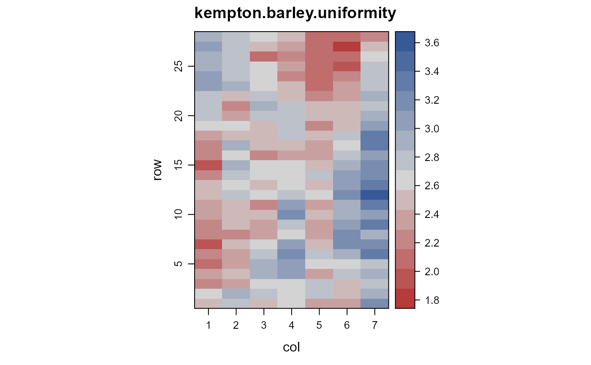

kempton.barley.uniformity.RdUniformity trial of barley at Cambridge, England, 1978.
A uniformity trial of spring barley planted in 1978. Conducted by the Plant Breeding Institute in Cambridge, England.
Each plot is 5 feet wide, 14 feet long.
Field width: 7 plots * 14 feet = 98 feet
Field length: 28 plots * 5 feet = 140 feet
A data frame with 196 observations on the following 3 variables.
rowrow
colcolumn
yieldgrain yield, kg
R. A. Kempton and C. W. Howes (1981). The use of neighbouring plot values in the analysis of variety trials. Applied Statistics, 30, 59--70. https://doi.org/10.2307/2346657
McCullagh, P. and Clifford, D., (2006). Evidence for conformal invariance of crop yields, Proceedings of the Royal Society A: Mathematical, Physical and Engineering Science. 462, 2119--2143. https://doi.org/10.1098/rspa.2006.1667
# \dontrun{ library(agridat) data(kempton.barley.uniformity) dat <- kempton.barley.uniformity libs(desplot) desplot(dat, yield~col*row, aspect=140/98, tick=TRUE, # true aspect main="kempton.barley.uniformity")# Kempton estimated auto-regression coefficients b1=0.10, b2=0.91 dat <- transform(dat, xf = factor(col), yf=factor(row)) # ---------- libs(asreml,lucid) # asreml4 dat <- transform(dat, xf = factor(col), yf=factor(row)) m1 <- asreml(yield ~ 1, data=dat, resid = ~ar1(xf):ar1(yf))#> Model fitted using the gamma parameterization. #> ASReml 4.1.0 Mon Jan 11 17:08:48 2021 #> LogLik Sigma2 DF wall cpu #> 1 138.768 0.0880303 195 17:08:48 0.0 (1 restrained) #> 2 190.210 0.0624855 195 17:08:48 0.0 #> 3 224.660 0.0667102 195 17:08:48 0.0 #> 4 230.382 0.0828740 195 17:08:48 0.0 #> 5 231.397 0.0999127 195 17:08:48 0.0 #> 6 231.425 0.1038940 195 17:08:48 0.0 #> 7 231.425 0.1043644 195 17:08:48 0.0# vc(m1) ## effect component std.error z.ratio bound ## xf:yf!R 0.1044 0.02197 4.7 P 0 ## xf:yf!xf!cor 0.2458 0.07484 3.3 U 0 ## xf:yf!yf!cor 0.8186 0.03821 21 U 0 # asreml estimates auto-regression correlations of 0.25, 0.82 # Kempton estimated auto-regression coefficients b1=0.10, b2=0.91 # ---------- if(0){ # Kempton defines 4 blocks, randomly assigns variety codes 1-49 in each block, fits # RCB model, computes mean squares for variety and residual. Repeat 40 times. # Kempton's estimate: variety = 1032, residual = 1013 # Our estimate: variety = 825, residual = 1080 fitfun <- function(dat){ dat <- transform(dat, block=factor(ceiling(row/7)), gen=factor(c(sample(1:49),sample(1:49),sample(1:49),sample(1:49)))) m2 <- lm(yield*100 ~ block + gen, dat) anova(m2)[2:3,'Mean Sq'] } set.seed(251) out <- replicate(50, fitfun(dat)) rowMeans(out) # 826 1079 } # }